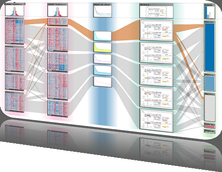
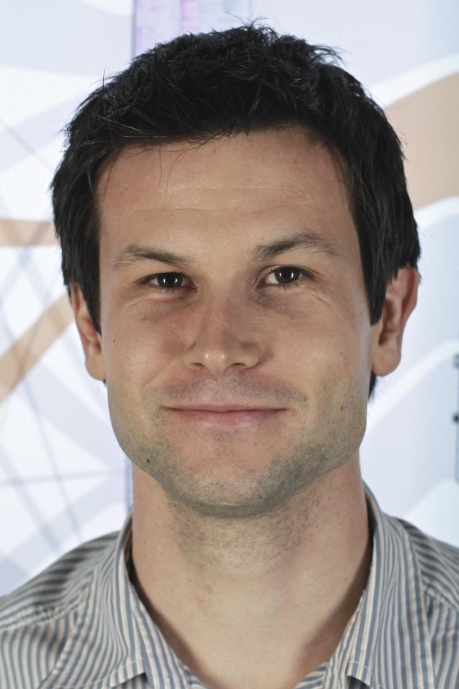

5th Symposium on Biological Data Visualization
10- 11 July // Dublin, Ireland @ ISMB/ECCB 2015
10- 11 July // Dublin, Ireland @ ISMB/ECCB 2015

Invited Speakers
We have selected a range of speakers that, together with the keynote speaker, will cover developments in a broad range of active research topics in modern biological data visualization.
Keynote
Visualization Analysis and Design for Biology[slides]
Computer-based visualization (vis) systems provide visual representations of datasets designed to help people carry out tasks more effectively. Visualization is suitable when there is a need to augment human capabilities rather than replace people with computational decision- making methods. The design space of possible vis idioms is huge, and includes the considerations of both how to create and how to interact with visual representations. Vis design is full of trade-offs, and most possibilities in the design space are ineffective for a particular task, so validating the effectiveness of a design is both necessary and difficult. Vis designers must take into account three very different kinds of resource limitations: those of computers, of humans, and of displays. Vis usage can be analyzed in terms of why the user needs it, what data is shown, and how the idiom is designed. I will discuss this framework for analyzing the design of visualization systems and analyze a range of biology visualization applications through this lens.

|
Tamara Munzner Tamara Munzner is a Professor of Computer Science at the University of British Columbia, in the research area of information visualization. She has been active in visualization research since 1991, and has published over fifty papers and book chapters. Before earning a PhD from Stanford in 2000, she was a technical staff member at the NSF-funded Geometry Center at the University of Minnesota for four years. Afterwards, she was a research scientist at the Compaq Systems Research Lab from 2000 to 2002. She co-chaired InfoVis in 2003 and 2004 and EuroVis in 2009 and 2010. She is currently on the InfoVis Steering Committee and the VIS Executive Committee, was a founding member of the BioVis Steering Committee from 2010 through 2013, and was a Member At Large of the Executive Committee of the IEEE Visualization and Graphics Technical Committee from 2004-2009. She hasconsulted for companies including Silicon Graphics, Microsoft, and early-stage startups. Her research interests include the development, evaluation, and characterization of information visualization systems and techniques from both problem-driven and technique-driven perspectives. She has worked on problem-driven visualization projects in a broad range of application domains, including genomics, evolutionary biology, large-scale system administration, web loganalysis, computational linguistics, and geometric topology. Her technique-driven interests include dimensionality reduction and graph drawing. |
Primer Speakers
Presenting data
Data visualization can serve two distinct purposes: to communicate research findings and to guide the data-exploration process as the scientific story is unfolding. Each goal requires a different approach to data representation, but sound graphic design principles are important in both. In this presentation I will demonstrate core concepts that make design a requirement, not a cosmetic addition, to construct presentations that are easy to interpret and understand.
 |
Bang Wong Bang Wong is the creative director of the Broad Institute of MIT and Harvard and an adjunct assistant professor in the Department of Art as Applied to Medicine at the Johns Hopkins University School of Medicine. His work focuses on the effective communication, presentation and exploration of complex biomedical data. At the Broad he co-leads the Visualization Skunkworks, an initiative that brings together researchers to develop and explore visualization solutions to enable new fundamental research discoveries. Before starting the Skunkworks, he created an exhibition space call the DNAtrium which enables visitors to explore the human genome. He is the founding author of the popular Points of View column that deals with the fundamental aspects of data presentation published by Nature Methods. His work has appeared in the New York Times Nature, Cell, and Science. Bang received a Masters degree in Immunology and a Masters degree in Medical Illustration both from the Johns Hopkins University School of Medicine. He is an elected member of the Board of Governors for the Association of Medical Illustrators and the co-founder of the Visualizing Biological Data (VIZBI) conference series. |
Fundamentals of Visualizing Biological Data[slides]
With the introduction of modern data acquisition techniques, like next-generation sequencing, life science researchers are confronted with an exploding collection of heterogeneous data. The availability of such techniques at comparably low costs shifted the challenge from the acquisition of the data to its analysis. However, not only the sheer amount of the data but also its complexity is challenging for life science researchers. While computational techniques have a long tradition in analyzing biological data, interactive visualization is now recognized as an important building block of the analysis process. Visualization can make use of the unique ability of humans to see patterns and trends in the data. In this presentation I will first give a broad overview of state-of-the-art techniques for visualizing biological data. In the second part of the talk I will focus on approaches that the visualization community developed to cope with the particular challenges posed by large and heterogeneous data.
|  |
Marc Streit Marc Streit is assistant professor at the Institute of Computer Graphics, Johannes Kepler University Linz, Austria. He finished his PhD at Graz University of Technology in early 2011 and moved to Linz later that year. As part of his tenure-track position, he spent a part of the year 2012 as a visiting researcher at the Center for Biomedical Informatics at Harvard Medical School. In 2014 he received a Fulbright scholarship for research and lecturing at Harvard University. He has won Best Paper Awards at InfoVis'13, BioVis'12, InfoVis'11, GI'10 and Honorable Mention Awards at CHI'14 and EuroVis'12. He is a co-author of the Nature Methods "Points of View" column. In 2013 he co-edited the Special Issue on Visual Analytics in the IEEE Computer journal. Additionally, he is actively contributing to the scientific community by serving on the organizing and program committee of several scientific events as well as by acting as a reviewer for high-quality journals and conferences. His scientific areas of interest include Information Visualization, Visual Analytics, and Biological Data Visualization, where he is particularly interested in the integrated analysis of large heterogeneous data. |
Challenges Speakers
Interactive graphics for high-dimensional genetic data[slides]
The value of interactive, dynamic graphics for making sense of high-dimensional data has long been appreciated but is still not in routine use. I will describe my efforts to develop interactive graphical tools for genetic data, using JavaScript and D3. I will focus on an expression genetics experiment in the mouse, with gene expression microarray data on each of six tissues, plus high-density genotype data, in each of 500 mice. I argue that in research with such data, precise statistical inference is not so important as data visualization.
 |
Karl W. Broman
Karl Broman is Professor in the Department of Biostatistics & Medical Informatics, University of Wisconsin-Madison. He is an applied statistician working on problems in genetics and genomics, with a particular focus on the genetic dissection of complex traits in experimental organisms. He develops the R package, R/qtl (rqtl.org).
|
Visualization Challenges and Advances in Metagenomics
Over the last fifteen years culture independent methods enabled sampling and analyzing microbial communities directly from the environment. Metagenomics field quickly thrived from the initial studies of simple communities to global oceans and human microbiome with advances in sequencing technologies and computational tools. Despite number of advances in the field, it still poses a significant challenge to effectively visualize metagenomics data. Most visualization tools are developed for genomics studies and they fall short in representing high volume, high dimensional metagenomics studies. Especially the magnitude of the data presents a challenge to meaningfully represent biologically valuable information from complex analysis results. In this talk, I will discuss the progress and challenges of metagenomics data visualization and highlight emerging tools. I will also give my perspective on using simple model communities to develop visualization tools for metagenomics.
 |
Serdar Turkarslan
Dr. Turkarslan is a Research Scientist at Institute for Systems Biology in Seattle, Washington. He got his PhD in Cell and Molecular Biology at University of Pennsylvania. He is interested in understanding how cells respond to changes in the environment by reprogramming their gene regulatory networks (GRN) and delineating the principles underlying the evolution of these complex regulatory programs. Dr. Turkarslan uses systems approaches to build global scale predictive network models for microbial organisms and simple communities to reverse engineer biological circuits. Currently, he is focused on delineating regulatory network readjustments that drive evolution of syntrophic community between sulfate reducing bacteria and methanogenic archaea. He is also interested in developing tools for exploration and visualization of large datasets in the field of systems biology and metagenomics. Dr. Turkarslan recently led development of the Network Portal Framework for storing, analyzing and visualizing biological networks.
|
BioVis 2014 is an official SIG of ISMB

BioVis 2014 Supporters
Platinum:

Silver:


We also acknowledge the support by BMC.